🔄 Lesson 30: Retopology Fundamentals
Transform high-resolution sculpts and messy geometry into clean, production-ready meshes. Learn retopology techniques that bridge the gap between artistic freedom and technical requirements—essential for animation, games, and professional pipelines.
🎯 What You'll Learn
- Retopology fundamentals: Why, when, and how to retopologize models
- Clean topology principles: Edge flow, quad counts, and deformation requirements
- Manual retopology: Building new mesh over existing geometry
- Blender retopology tools: Snap to surface, shrinkwrap, and poly build
- Automated solutions: Quad remesh, voxel remesh, and when to use them
- Detail transfer: Baking high-res details to low-poly meshes
- Project: Retopologize a sculpted model for game/animation use
⏱️ Estimated time: 90-120 minutes
🎨 Project: Create production-ready topology from sculpted mesh
In This Lesson
🔄 What Is Retopology?
Retopology is the process of rebuilding a mesh with clean, optimized topology. You create a new mesh that follows the forms of an existing high-resolution or messy model, maintaining the shape while dramatically improving the underlying structure. It's the bridge between artistic freedom and technical requirements.
The Retopology Concept
🎭 Two Meshes, One Model
What retopology creates:
- High-resolution source: Detailed sculpt or complex model
- Millions of polygons
- Beautiful surface detail
- Messy, unusable topology
- Too heavy for real-time use
- Low-resolution retopo: Clean mesh following same forms
- Thousands of polygons (or less)
- Clean quad topology
- Animation-ready
- Game engine optimized
- The magic: Bake high-res detail to low-res textures
- Visual quality of millions of polygons
- Performance of thousands of polygons
- Best of both worlds
The retopology process:
- Create detailed model (sculpting, Boolean operations, etc.)
- Build new clean mesh over the detailed model
- Match forms but with optimized polygon count
- Bake details from high to low as textures (normal maps, etc.)
- Use low-poly in production with baked detail
Common terminology:
- High-poly: Original detailed mesh (source)
- Low-poly: New retopologized mesh (target)
- Retopo: Short for retopology (the new mesh)
- Baking: Transferring detail to textures
- Cage: The new mesh wrapping the old
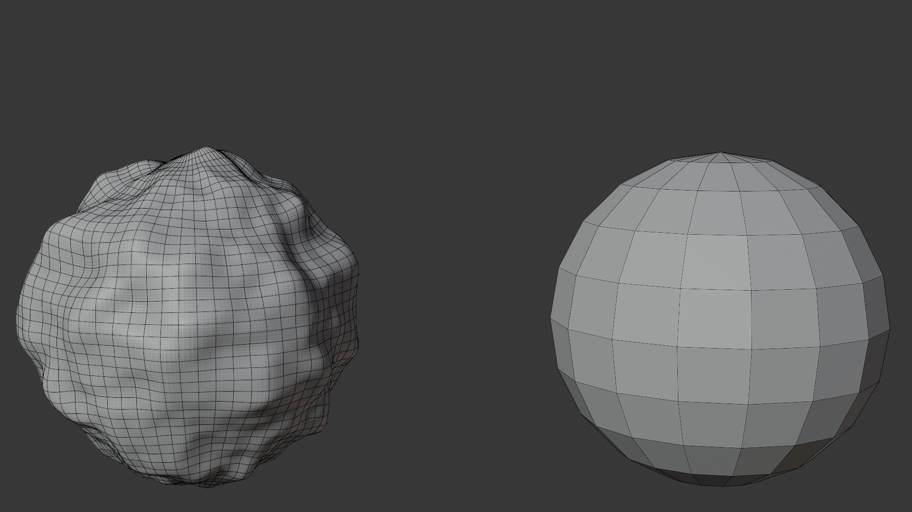
Where Retopology Fits
🔀 Pipeline Position
Retopology happens between:
- Before retopo: Artistic phase (sculpting, Boolean work)
- Retopology: Technical optimization phase
- After retopo: Production phase (UV, texturing, rigging)
Who does retopology:
- Character artists: After sculpting characters
- Environment artists: Optimizing props and assets
- Technical artists: Preparing assets for game engines
- Riggers: Ensuring deformation-ready topology
- Often a dedicated retopology artist in larger studios
When You Need Retopology
🎯 Use Case Scenarios
After sculpting:
- Sculpted character with Dynamic Topology
- Millions of triangles
- Can't animate
- Too heavy for games
- Needs clean retopo
- ZBrush or sculpting app import
- High-res sculpt from external software
- Bring into Blender, retopologize
- Standard character workflow
After Boolean operations:
- Hard surface model with many Booleans
- Messy triangulated geometry
- Subdivision artifacts
- Clean retopo for animation
Game asset optimization:
- Film-quality model needs game version
- 200k polygons → 5k polygons
- Maintain silhouette
- Bake detail to textures
Old/imported models:
- Models with terrible topology
- Legacy assets
- 3D scans
- CAD imports
- Retopo for usability
Animation preparation:
- Model needs to deform properly
- Current topology causes artifacts
- Retopo with proper edge loops
- Follow muscle and joint structure
When You DON'T Need Retopology
🚫 Skip It If...
Already have clean topology:
- Polygon-modeled with good edge flow
- Used Multiresolution modifier for detail
- Base mesh is already usable
- Just use base mesh, done
Static, non-deforming objects:
- Props that never animate
- Buildings or environments
- Background elements
- Topology doesn't matter if not deforming
Illustration or concept work:
- Not going into production
- Just renders or portfolio pieces
- High-poly sculpt renders fine
- Skip retopo, save time
3D printing:
- Topology doesn't matter for printing
- Just needs watertight mesh
- High poly actually better (more detail)
Low-poly from start:
- Modeled for games from beginning
- Already optimized polygon count
- Clean quads throughout
- No retopo needed
💡 Retopology Is The Bridge: Sculpting is freedom. Topology is constraint. Retopology bridges them. You get to explore forms freely, push detail as far as you want, ignore technical limits. Then retopology converts that artistic output into technical assets. It's the translation layer between "making it beautiful" and "making it work." Without retopology, you choose: beautiful OR functional. With retopology, you get both. This is why every character artist, every game artist, every technical artist learns retopology. It's not optional. It's the skill that makes everything else possible.
❓ Why Retopology Is Essential
Understanding why retopology matters helps you appreciate the process and recognize when it's necessary. Retopology solves specific problems that can't be addressed any other way—problems that stand between your sculpt and professional production.
The Performance Problem
⚡ Polygon Count Matters
High-poly reality check:
- Sculpted character: 5-20 million polygons
- Beautiful detail
- Smooth surfaces
- Renders fine in Blender
- But completely unusable in real-time
- Game engine limits:
- Mobile games: 1,000-5,000 triangles per character
- Console/PC games: 10,000-50,000 triangles
- VR (strict limits): 5,000-20,000 triangles
- Your 5 million poly sculpt? Won't even load
- Animation software:
- Can handle more than games
- But millions of polys = slow viewport
- Difficult to rig and animate
- Long render times
The retopo solution:
- 20,000 polygon retopo mesh (manageable)
- Baked normal map captures sculpt detail
- Visual: 5 million polygon quality
- Performance: 20,000 polygon cost
- Game engines happy, animators happy, everyone happy
The Animation Problem
🎭 Deformation Requirements
Why sculpted topology doesn't animate:
- Random triangle distribution:
- Triangles point every direction
- No edge loops around joints
- Deformation creates artifacts
- Looks broken when posed
- No anatomical flow:
- Edge loops need to follow muscles
- Circles around joints (shoulders, elbows, knees)
- Sculpt topology ignores this
- Result: unnatural bending
- Too much detail in wrong places:
- Millions of polygons in static areas
- Joint areas need specific topology
- Can't direct detail where needed
Animation-ready topology needs:
- Edge loops around joints (concentric circles)
- Edge loops following muscle flow
- Quad faces for predictable subdivision
- Higher density in deforming areas
- Lower density in rigid areas
- Retopology provides this
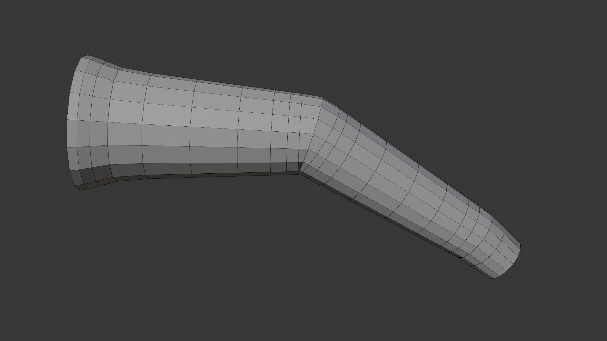
The Technical Problem
🔧 Production Requirements
UV unwrapping issues:
- Sculpted meshes = nightmare to unwrap
- Millions of faces to unfold
- Chaotic topology creates distortion
- Retopo mesh: easy, clean UV layout
Modifier compatibility:
- Many modifiers require quads
- Subdivision Surface especially
- Triangulated sculpts = artifacts
- Clean retopo = modifier-friendly
File size and memory:
- 5 million polygon file: 500MB+
- 20,000 polygon file: 5MB
- 100x size reduction
- Faster loading, less memory, easier collaboration
Pipeline integration:
- Game engines expect optimized meshes
- Rigging tools need clean topology
- Other artists need to work with your assets
- Professional pipelines assume retopology
The Quality Problem
✨ Professional Standards
Industry expectations:
- Game studios: All characters must be retopologized
- Specific poly count budgets
- Clean quad topology required
- No exceptions
- Animation studios: Deformation quality critical
- Edge flow must support motion
- Retopo for proper deformation
- Standard workflow step
- VFX studios: Mix of high and low poly
- Hero characters: full detail
- Background: retopologized
- Depends on shot requirements
Portfolio implications:
- Sculpt showcases artistic skill
- But hireable artists show technical skill too
- Retopo demonstrates production knowledge
- Both skills together = professional
💡 The Reality of Production: In your personal projects, you can skip retopo. Render your 10 million poly sculpts directly. Take beautiful screenshots. Build portfolio. But the moment you work professionally—game studio, animation studio, client work—retopology becomes mandatory. Not optional. Not nice-to-have. Mandatory. Because production has constraints: performance budgets, animation requirements, pipeline standards, collaboration needs. Your beautiful sculpt doesn't matter if it can't be used. Retopology is how artistic vision becomes shippable product. Learn it. Master it. It's the difference between "makes pretty pictures" and "ships professional products."
🎨 Manual Retopology Techniques
Manual retopology is the foundation of retopology mastery. While automated tools have their place, understanding manual techniques gives you complete control, teaches you topology principles deeply, and enables you to handle any retopology challenge. Let's explore Blender's manual retopology tools and workflows.
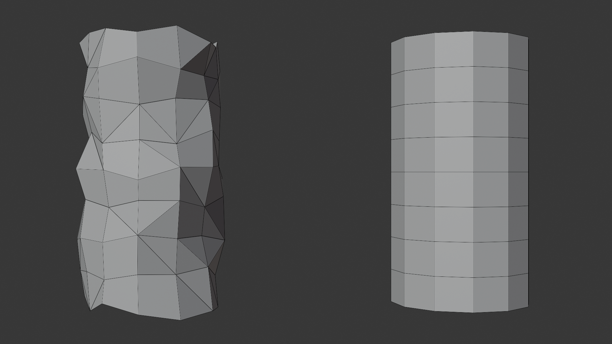
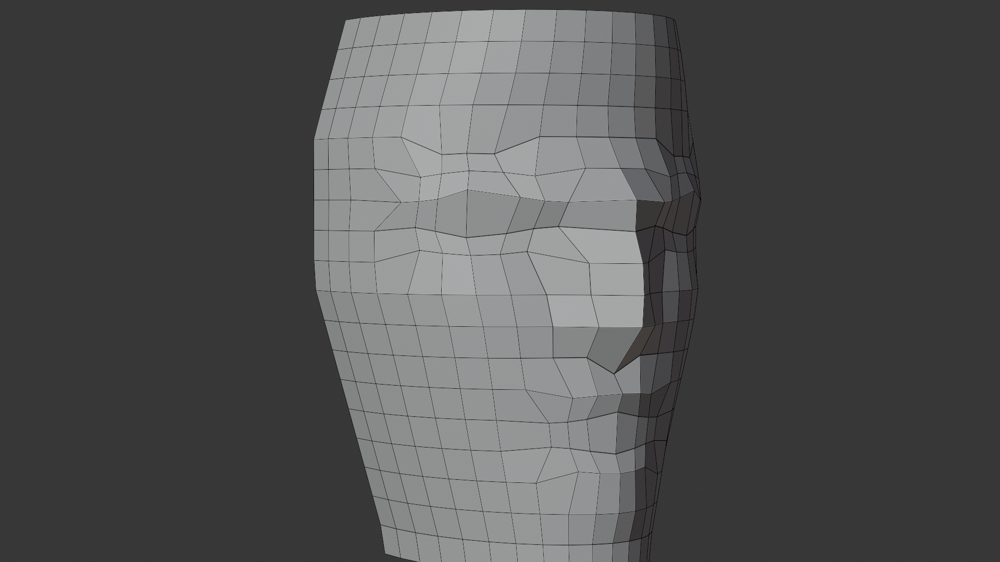
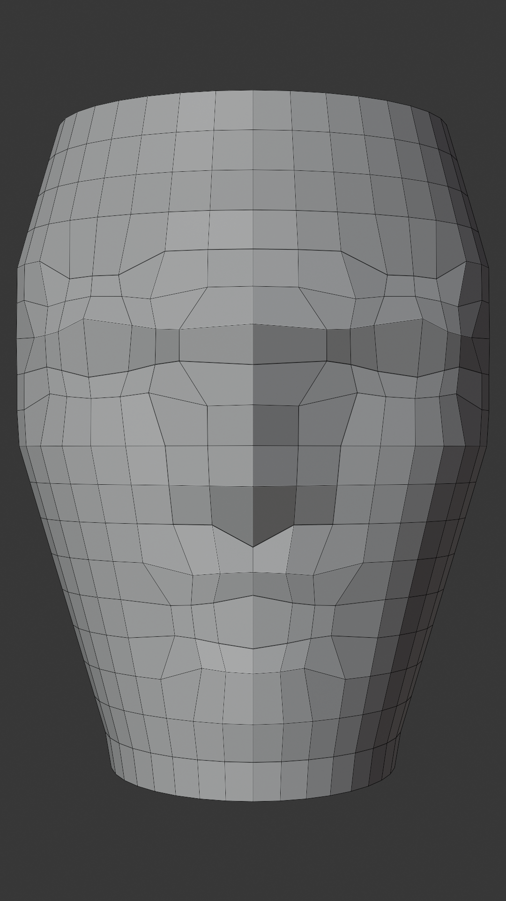
Setting Up for Manual Retopology
🔧 Workspace Configuration
Preparing your source mesh:
- Visibility settings:
- Select your high-poly source mesh
- In Outliner, click the eye icon to toggle visibility
- Or press H to hide (unhide with Alt+H)
- You want to see it but not select it accidentally
- Display as wireframe:
- Select source mesh
- Object Properties panel → Viewport Display
- Set Display As to "Wire"
- Adjust Color to something visible (light blue/gray)
- Now you see through it while retopologizing
- Make unselectable:
- In Outliner, click the cursor/pointer icon
- Or in viewport: select source, M → move to collection named "Source" or "Reference"
- Disable selection for that collection (cursor icon in Outliner)
- Prevents accidental selection while working
Creating your retopo mesh:
- Start clean:
- Shift+A → Mesh → Plane (or single vertex if preferred)
- Position near your source mesh
- This becomes your retopo mesh
- All new geometry builds from here
- Name your objects:
- Source mesh: "Character_HighPoly" or "Sculpt_Source"
- Retopo mesh: "Character_Retopo" or "LowPoly"
- Clear naming prevents confusion
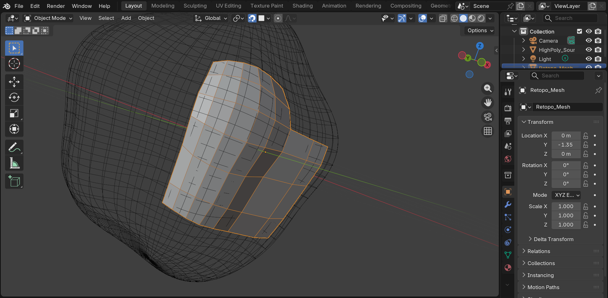
Essential Retopology Settings
⚙️ Snap to Surface Configuration
Enabling snap settings:
- Turn on snapping:
- Top header bar: magnet icon
- Or press Shift+Tab to toggle snapping
- Snapping must be ON for retopology
- Snap to Face:
- Click the dropdown next to the magnet
- Select "Face" (not Vertex, Edge, or Volume)
- This snaps to surface of faces
- Project onto Self:
- In snap dropdown, enable the crosshair icon
- "Project Individual Elements"
- Projects your retopo onto nearest surface
- Critical for staying on surface
- Snap target "Closest":
- Also in snap dropdown
- Ensures vertices snap to nearest point on surface
- Default should work, but verify
💡 Pro Tip: Snap Settings Quick Reference
Save time by memorizing these snapping shortcuts:
- Shift+Tab - Toggle snapping on/off
- Shift+Ctrl+Tab - Quick access to snap menu
- Keep snapping ON during entire retopology session
- If vertices aren't sticking to surface, check these settings first
X-Ray mode (optional but helpful):
- Press Alt+Z to toggle X-Ray mode
- See through your retopo mesh to source behind
- Useful for complex areas
- Some prefer it on, others off—experiment
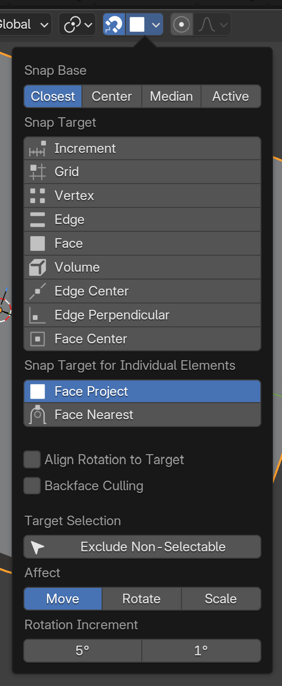
The Poly Build Tool
🏗️ Your Primary Retopology Tool
Poly Build is Blender's dedicated retopology tool. It's designed specifically for building new geometry over existing surfaces. Think of it as a smart extrude tool that understands retopology workflows.
Activating Poly Build:
- Enter Edit Mode (Tab) on your retopo mesh
- Toolbar (left side): Click the Poly Build tool icon
- Looks like a face with a plus sign
- Or press Shift+Spacebar → search "Poly Build"
- Cursor changes to indicate Poly Build mode
Poly Build operations:
- Create new face (on open edge):
- Hover over an edge on the boundary of your mesh
- Edge highlights
- Click to extrude a new quad
- New face sticks to surface automatically
- This is how you grow your retopo mesh
- Create vertex (on empty space):
- Hover over source mesh surface
- Ctrl+Click to place a vertex
- Vertex snaps to surface
- Useful for starting new areas
- Move existing vertex:
- Hover over vertex you want to move
- Click and drag
- Vertex slides along surface
- Stays snapped while moving
- Perfect for adjusting placement
- Delete face/edge:
- Hover over what you want to delete
- Shift+Click to delete
- Quick cleanup without switching tools
- Bridge edges:
- Select two edges that need connecting
- Alt+Click between them (with Poly Build active)
- Creates face bridging the edges
✅ Poly Build Quick Reference
| Action | Input | Result |
|---|---|---|
| Extrude face | Click on edge | New quad appears |
| Place vertex | Ctrl+Click on surface | Single vertex created |
| Move vertex | Click+Drag vertex | Vertex slides on surface |
| Delete | Shift+Click element | Element removed |
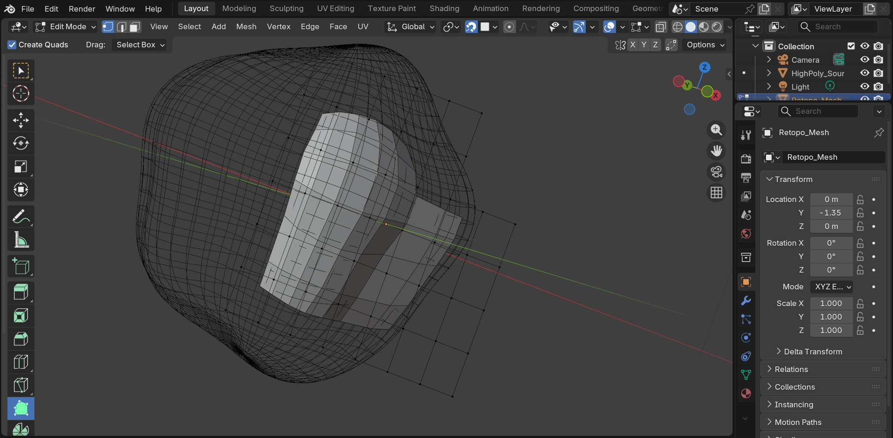
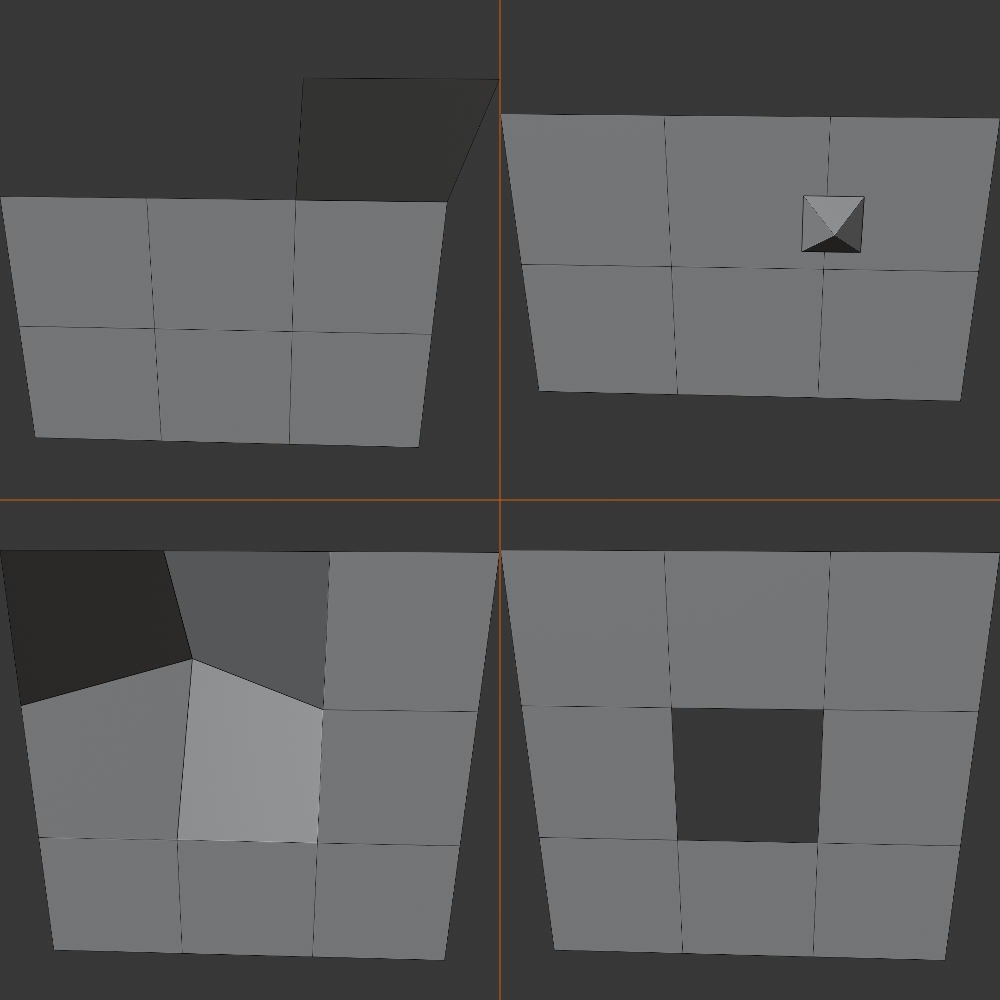
Manual Retopology Workflow
👣 Step-by-Step Process
Phase 1: Starting the retopo (the first quad)
- Choose starting point:
- Pick a clear, simple area to begin
- For faces: between eyes or top of nose
- For bodies: center of chest or back
- Avoid starting at complex areas
- Place first four vertices:
- Poly Build active, Ctrl+Click four times
- Place vertices in quad pattern (square/rectangle)
- Each vertex snaps to surface
- Don't worry about perfection yet
- Create first face:
- Select all four vertices (Alt+A to select all, or box select B)
- Press F to create face
- Your first quad is born!
- This is your foundation
Phase 2: Growing the mesh
- Extrude quads continuously:
- With Poly Build active, hover over outer edge
- Click to extrude new quad
- New face follows surface curvature
- Repeat, building quad by quad
- Follow natural forms:
- Build rows that follow the shape
- On a sphere: circular rows like latitude lines
- On a cylinder: rings around the form
- On organic forms: follow muscle/anatomy
- Create edge loops early:
- Think about where loops should run
- Around joints: concentric circles
- Along limbs: parallel rings
- Establish these patterns from the start
- Work in sections:
- Build a logical section, then move on
- Example: complete nose, then do cheeks
- Don't jump around randomly
- Methodical = fewer mistakes
Phase 3: Connecting areas
- Bridge gaps between sections:
- You've built two separate areas
- Need to connect them with new faces
- Select edges to bridge
- Ctrl+E → Bridge Edge Loops (or Poly Build bridge)
- Manage topology transitions:
- Sometimes edge loops don't match
- 5 edges on one side, 4 on other
- Need to merge or split edges to match
- This is where poles (3 or 5-edge vertices) appear
- Close the mesh:
- Eventually all sections connect
- Final gaps are filled with quads
- Entire surface covered
- Mesh is now "watertight"
Phase 4: Refinement
- Adjust vertex positions:
- Poly Build: click and drag vertices
- Or regular move G with snapping on
- Perfect the silhouette
- Ensure vertices sit exactly on forms
- Even out face sizes:
- Look for huge faces next to tiny ones
- Adjust vertices to make sizes consistent
- Subdivision Surface shows this clearly
- Add temporary Subdivision modifier to check
- Clean up topology errors:
- Find triangles: Select → Select All by Trait → Faces by Sides → Triangles
- Convert to quads where possible
- Check for ngons (5+ sides) and fix them
- Aim for 95%+ quads
Alternative Tools: Shrinkwrap Modifier
🔗 Automatic Surface Projection
The Shrinkwrap modifier is an alternative approach to snapping. Instead of relying on snap settings, Shrinkwrap continuously projects your retopo mesh onto the source surface. Many retopo artists prefer this method.
Setting up Shrinkwrap:
- Add the modifier:
- Select your retopo mesh
- Modifiers panel → Add Modifier → Shrinkwrap
- Appears in modifier stack
- Configure settings:
- Target: Select your high-poly source mesh
- Wrap Method: Set to "Project"
- Axis: Typically check "Negative" and "Positive" for the axis (usually Z)
- Offset: Leave at 0.0 (or small value like 0.001 to avoid z-fighting)
- How it works:
- Every vertex automatically projects onto source
- Move vertices anywhere, they stick to surface
- No need for snap settings
- Real-time projection as you work
Shrinkwrap advantages:
- Consistent projection (never "misses" the surface)
- Works with all modeling tools (not just Poly Build)
- Can use standard extrude, inset, etc.
- Visually clear: vertices always stick
Shrinkwrap disadvantages:
- Can be slower on very high-poly source meshes
- Sometimes projects to wrong side of thin geometry
- Need to apply modifier eventually (or keep it)
- Less precise control than manual snap
💡 Pro Tip: Snap vs. Shrinkwrap
Most professionals use a combination:
- Shrinkwrap modifier: Always on, provides base projection
- Snap settings: Also enabled for precise vertex placement
- Both together = best results
- Shrinkwrap keeps you on surface, snap gives precision control
- Try both methods and find your preference
Efficient Edge Loop Creation
➰ Building Loops Strategically
Creating circular loops (for joints, face features):
- Start with a strip:
- Build a straight strip of quads
- Example: 8 quads in a row
- This becomes one "section" of the loop
- Continue around the form:
- Keep extruding in circular pattern
- Follow the round shape (eye socket, joint, etc.)
- Eventually you come back to start
- Close the loop:
- Last edge connects to first edge
- Select both edges → Bridge (Ctrl+E → Bridge Edge Loops)
- Or carefully place final quads manually
- Loop is now complete circle
- Add parallel loops:
- Repeat process inside or outside first loop
- Multiple concentric loops for joints
- This is proper joint topology
Creating parallel loops (along limbs, torso):
- Establish first loop:
- Build ring around arm/leg/torso
- Complete circle of quads
- Extrude along length:
- Select entire loop (Alt+Click on edge)
- Extrude (E) and move along limb
- Or extrude individual edges with Poly Build
- Creates parallel loop
- Repeat for full length:
- Continue extruding loops
- Each loop maintains same edge count
- Clean, parallel structure along entire limb
Loop subdivision (adding density):
- Ctrl+R to add edge loop (loop cut)
- Hover over area, loop preview appears
- Click to place, slide to position
- Click again to confirm
- Adds edge loop across multiple faces
- Quick way to increase density
Common Manual Retopo Challenges
⚠️ Problems and Solutions
Challenge: Vertices won't stick to surface
- Check snapping is enabled: Look for magnet icon in header (should be blue/active)
- Verify snap mode: Should be "Face" not "Vertex" or "Edge"
- Enable "Project onto Self": The crosshair icon in snap dropdown
- Alternative: Use Shrinkwrap modifier instead of snap
Challenge: Creating uneven quad sizes
- Solution: Adjust vertex spacing as you go
- Don't wait until the end
- Keep faces roughly square-shaped
- Use Poly Build click-and-drag to adjust
- Check with subdivision:
- Add Subdivision Surface modifier (don't apply)
- Uneven faces become obvious
- Adjust vertices until subdivision looks smooth
Challenge: Accidental triangles everywhere
- Cause: Not planning edge flow
- Randomly placing edges
- Not thinking about loops
- Solution: Always think in loops
- Each new row should complete a loop
- Edge loops should be continuous
- Plan where loops need to run before building
- Fix existing triangles:
- Select triangle face
- Try: Face → Tris to Quads (Alt+J)
- May need to manually add/remove edges
Challenge: Edge loops don't match when connecting areas
- Example: One section has 5 edges, other has 4
- Can't bridge directly
- Need to merge or split to match
- Solution 1: Add edges to match:
- In the 4-edge section, add one more edge
- Now both have 5 edges
- Can bridge cleanly
- Solution 2: Use a pole:
- Create vertex where 3 or 5 edges meet
- Transitions from one edge count to another
- Place poles in non-deforming areas
Challenge: Can't see what I'm doing (visual clutter)
- Adjust source mesh display:
- Make it more transparent (wireframe display)
- Change color to less prominent
- Hide temporarily if needed (H)
- Use Cavity/X-Ray shading:
- Viewport Shading → Solid mode
- Enable Cavity in shading options
- Highlights edges and forms
- Toggle X-Ray with Alt+Z
- Work in sections:
- Focus on one area at a time
- Use local view (/ on numpad)
- Isolates selected objects
Speed Techniques for Manual Retopo
⚡ Working Faster
Keyboard shortcuts mastery:
- Essential shortcuts to memorize:
- E - Extrude (standard method when not using Poly Build)
- Ctrl+R - Loop cut (add edge loops quickly)
- Alt+Click - Select edge loop
- G - Move vertices (with snap, they stick to surface)
- F - Make face from selected vertices/edges
- X - Delete menu
- Ctrl+E - Edge menu (Bridge Edge Loops here)
- Selection shortcuts:
- Alt+A - Select all/none
- Alt+Shift+Click - Select edge ring
- Ctrl+Numpad+ - Expand selection
- Ctrl+Numpad- - Contract selection
Workflow optimizations:
- Use symmetry when possible:
- Retopologize one half of character
- Mirror modifier duplicates to other side
- Save 50% of time on symmetrical models
- Set up: Modifiers → Mirror → set axis, enable clipping
- Build in strategic order:
- Start with major forms (torso, head)
- Then limbs and extremities
- Details last (fingers, ears, etc.)
- Easier to fix early mistakes
- Take breaks and check overall:
- Zoom out periodically
- Check silhouette from multiple angles
- Easy to get lost in details
- Overall form matters most
Reference and planning:
- Keep topology references visible:
- Have good topology examples in second monitor/window
- Blender Reference Images addon
- Or just browser window with topology diagrams
- Mark important loops before detail work:
- Plan edge flow with Grease Pencil
- Draw where loops should run
- Or keep mental/written notes
- Planning prevents mistakes
When to Use Manual vs. Automated
🤔 Decision Framework
| Scenario | Best Method | Why |
|---|---|---|
| Character for animation | Manual | Need perfect edge flow for deformation |
| Hero game asset | Manual | Polygon budget critical, needs optimization |
| Background prop | Automated | Speed more important than perfect topology |
| Environment rock/tree | Automated | Organic, no deformation needs |
| Learning topology | Manual | Understanding comes from doing manually |
| Complex hard surface | Hybrid | Auto for base, manual for refinement |
| Portfolio piece | Manual | Demonstrate technical skill to employers |
| Quick prototype | Automated | Just need something functional fast |
General rule: If topology matters (animation, close-ups, hero assets), go manual. If speed matters more than perfection (backgrounds, prototypes, static objects), automated is fine.
💡 Manual Retopology Is Skill Building: Manual retopology is tedious. No one will argue otherwise. Click, snap, extrude, adjust. Repeat for hours. But here's what you gain: deep understanding of topology. You learn why edge loops matter. Where to place poles. How forms deform. What makes topology "good." Automated tools are great. They save time. But they can't teach you what manual retopology teaches. So even if you plan to use automated tools professionally, spend time learning manual first. Do a character by hand. Understand every vertex placement. Then when you use automated tools, you'll know what to look for. What to fix. What's acceptable. The skill compounds. Manual retopology builds intuition that serves you forever. Even when you're not doing it manually anymore.
🤖 Automated Retopology
Automated retopology tools use algorithms to generate clean topology automatically. While they can't match the precision of manual work for every scenario, they're incredibly valuable for speed, learning, and handling assets where perfect topology isn't critical. Let's explore Blender's automated solutions and when to use them.
Blender's Built-in Tools
⚙️ Native Retopology Options
Remesh Modifier (basic automation):
- What it does:
- Creates uniform grid of quads/triangles
- Voxel-based algorithm
- Very fast, basic results
- How to use:
- Select your high-poly mesh
- Add Modifier → Remesh
- Set Voxel Size (smaller = more detail, higher poly count)
- Adjust until you get desired density
- Apply modifier when satisfied
- Remesh modes:
- Blocks: Minecraft-style cubes (rarely useful)
- Smooth: Smoothed surface (most common)
- Sharp: Preserves hard edges better
- Most retopo uses Smooth mode
- Best for:
- Quick cleanup of messy geometry
- Organic forms (rocks, terrain)
- Background assets
- First pass before manual refinement
- Limitations:
- Creates mostly triangles, not quads
- No edge flow consideration
- Uniform density (can't prioritize areas)
- Not suitable for animation
✅ Quick Remesh Workflow
- Select high-poly object
- Add Modifier → Remesh
- Mode: Smooth
- Voxel Size: Start at 0.02-0.05 (adjust based on object size)
- Preview result in viewport
- Decrease voxel size for more detail, increase for less
- Apply modifier when happy
Pro tip: Hold Shift while adjusting voxel size for fine control.
Quad Remesh (Blender 4.0+)
🎯 Intelligent Quad Generation
Quad Remesh is Blender's advanced automated retopology solution, introduced in Blender 4.0. It analyzes your mesh and generates quad-dominant topology with better edge flow than standard Remesh. This is the automated tool professional artists actually use.
Accessing Quad Remesh:
- As a modifier:
- Select object → Add Modifier → Remesh
- Change mode from "Voxel" to "Quad"
- Real-time preview
- Non-destructive (can adjust settings)
- As an operator:
- Object Mode → Mesh menu → Remesh → Quad Remesh
- One-time operation
- Replaces original mesh
- Can't adjust after (unless undo)
Quad Remesh settings:
- Target Face Count:
- Desired number of faces in output
- Higher = more detail
- Start with ~5,000-10,000 for characters
- Adjust based on your needs
- Adaptivity:
- 0.0 = uniform density everywhere
- 1.0 = maximum adaptation to detail
- Around 0.5-0.8 typically works well
- Higher values put detail where curvature changes
- Smooth Normals:
- Smooths the result
- Usually keep enabled
- Makes surface transitions smoother
- Preserve Sharp:
- Tries to maintain hard edges
- Enable for hard surface models
- Less useful for organic characters
- Preserve Boundary:
- Keeps mesh boundaries clean
- Enable if your mesh has open edges
- Prevents weird edge behavior
Quad Remesh workflow:
- Prepare source mesh:
- Make sure it's manifold (no holes or errors)
- Fix any geometry problems first
- Scale to reasonable size (algorithm works better)
- Apply Quad Remesh:
- Add as modifier (recommended) or use operator
- Set Target Face Count based on needs
- Start with Adaptivity around 0.6
- Evaluate results:
- Check topology quality (look for quads)
- Verify edge flow makes sense
- Add Subdivision Surface to check smoothness
- Test deformation if for animation
- Adjust settings:
- Too many polys? Decrease Target Face Count
- Need more detail in complex areas? Increase Adaptivity
- Iterate until acceptable
- Manual cleanup (usually needed):
- Fix any problem areas
- Improve edge flow around joints
- Add loops where needed
- Remove unnecessary loops
💡 Quad Remesh Pro Tips
- Use as starting point: Don't expect perfection. Generate base topology, then refine manually
- Multiple density levels: Run Quad Remesh at different face counts, compare results
- Combine with manual work: Auto remesh body, manually retopo face (face needs better control)
- Check with Subdivision: Always test how result subdivides before committing
- Save original: Duplicate high-poly before remeshing (in case you need to try again)
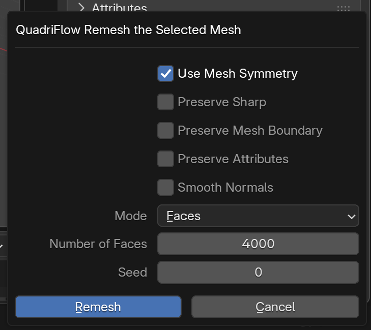
Instant Meshes (External Tool)
🔌 Powerful External Solution
Instant Meshes is a free, open-source retopology tool that many Blender artists use. It often produces better results than Blender's built-in remesh for complex models. It's a separate application that you export to and import back from.
Setting up Instant Meshes:
- Download and install:
- Search "Instant Meshes" (free, open source)
- Available for Windows, Mac, Linux
- No installation needed (standalone executable)
- Workflow overview:
- Export from Blender as OBJ or PLY
- Open in Instant Meshes
- Generate retopology
- Export result
- Import back into Blender
Using Instant Meshes:
- Export from Blender:
- Select high-poly mesh
- File → Export → Wavefront (.obj)
- Choose location, export
- Load in Instant Meshes:
- Open Instant Meshes application
- Drag and drop OBJ file into window
- Or use Open button
- Set target vertex count:
- Input panel: "Target vertex count"
- For 20k poly character: ~10,000 vertices (each vertex = ~2 faces)
- Experiment with values
- Compute orientation field (optional):
- Click "Orientation Field" button
- Shows flow lines across surface
- Can manually adjust with brush tools if needed
- Most times automatic works fine
- Compute position field (optional):
- Click "Position Field" button
- Shows vertex placement
- Usually automatic is good
- Generate mesh:
- Click "Solve" button
- Instant Meshes generates quad topology
- View result in real-time
- Can iterate by adjusting vertex count and resolving
- Export result:
- Click "Export Mesh" button
- Save as OBJ
- Import back into Blender
Instant Meshes advantages:
- Better edge flow than basic remesh
- True quad output (not triangles)
- Manual control over flow direction if needed
- Handles complex forms well
- Free and fast
Instant Meshes disadvantages:
- Requires export/import workflow
- Extra application to manage
- Learning curve for advanced features
- May need cleanup in Blender after
Voxel Remesh for Sculpting
🎨 Remesh During Sculpting
Voxel Remesh in Sculpt Mode is technically a remeshing tool, not retopology, but it's worth understanding as part of the overall workflow. It creates uniform topology that you later retopologize for production.
Voxel Remesh in Sculpt Mode:
- Purpose:
- Maintain uniform density while sculpting
- Fix stretched or bunched geometry
- Add detail uniformly
- Creates sculpt-friendly topology
- How to use:
- Sculpt Mode → top header → Remesh dropdown
- Set Voxel Size (smaller = more detail)
- Ctrl+R to remesh (shortcut)
- Mesh rebuilds with uniform voxel grid
- When to voxel remesh:
- After major form changes
- When geometry becomes too stretched
- Before adding fine detail
- To increase overall resolution
- Important note:
- This creates sculpting topology (millions of polys)
- Still need proper retopology for production
- This is the "high-poly source" you retopo later
⚠️ Voxel Remesh vs. Retopology
Don't confuse these two processes:
- Voxel Remesh (during sculpting):
- Maintains uniform sculpting topology
- Creates high-poly mesh (millions of triangles)
- Used WHILE sculpting
- Not production-ready
- Retopology (after sculpting):
- Creates clean production topology
- Creates low-poly mesh (thousands of quads)
- Used AFTER sculpting complete
- Production-ready result
Voxel Remesh supports sculpting. Retopology prepares for production. Different purposes.
Automated Retopology Workflow
🔄 Full Automated Process
Best practice workflow for automated retopo:
- Prepare source mesh:
- Complete your sculpting/modeling
- High-poly mesh is final
- Duplicate original (safety backup)
- Choose appropriate tool:
- Simple organic objects: Remesh modifier
- Characters/complex forms: Quad Remesh or Instant Meshes
- Hard surface: Often better manual, but can try Quad Remesh with sharp edges enabled
- Generate initial retopo:
- Apply chosen automated tool
- Iterate on settings until reasonable
- Don't expect perfection
- Goal: 70-80% there automatically
- Evaluate topology quality:
- Face → Select All by Trait → Faces by Sides → Triangles
- How many triangles? (Want mostly quads)
- Edge flow logical? (Alt+Click edges to check loops)
- Subdivision Surface looks good?
- Manual refinement (critical step):
- Fix triangles: Convert to quads where possible (Alt+J)
- Improve edge flow: Add loops around joints, remove unnecessary loops
- Adjust density: More detail in face/hands, less in torso
- Perfect silhouette: Adjust vertices to match high-poly shape exactly
- This is where skill matters
- Test deformation (if for animation):
- Add simple armature
- Weight paint roughly
- Test bending at joints
- Fix topology if artifacts appear
- Verify polygon count:
- Check final poly count (visible in header)
- Within budget?
- If not, reduce loops or use Decimate modifier carefully
✅ Reality Check: Automated Is Not Automatic
Automated tools are starting points, not finished products:
- Expect to spend 30-50% of retopo time on manual cleanup
- Automated gives you the bulk shape quickly
- Manual refinement makes it production-quality
- Professionals use both: automated for speed, manual for quality
- Total time: Still faster than 100% manual, but not instant
The hybrid approach wins: Use automated tools to get 70% there fast, then manual skills to perfect the remaining 30%. This is the modern professional workflow.
Comparing Automated Solutions
📊 Tool Comparison Matrix
| Tool | Output Quality | Speed | Best Use Case |
|---|---|---|---|
| Remesh (Voxel) | ⭐⭐ (Low - triangles) | ⚡⚡⚡ (Very Fast) | Quick cleanup, background objects |
| Quad Remesh | ⭐⭐⭐⭐ (Good - quads) | ⚡⚡ (Fast) | Characters, props, general use |
| Instant Meshes | ⭐⭐⭐⭐⭐ (Excellent) | ⚡⚡ (Fast) | Complex models, when quality matters |
| Manual Retopo | ⭐⭐⭐⭐⭐ (Perfect) | ⚡ (Slow) | Hero assets, animation, learning |
Decision tree:
Common Automated Retopo Mistakes
⚠️ What to Watch For
Mistake: Using automated result directly without cleanup
- Problem: Automated tools create "good enough" topology, not "production-ready"
- Issues:
- Random triangles in deforming areas
- Edge loops that don't support animation
- Inefficient polygon distribution
- Solution: Always plan for manual cleanup phase
- Budget time: 30-50% of retopo time
- Focus on critical areas (face, joints)
- Test deformation before calling it done
Mistake: Wrong poly count target
- Too high:
- Defeats purpose of retopology
- Still too heavy for real-time
- Wasted polygons
- Too low:
- Loses important forms
- Silhouette accuracy suffers
- Can't capture necessary detail
- Solution: Research poly budgets for your target platform
- Mobile game character: 5,000-8,000 polys
- PC/console character: 15,000-30,000 polys
- Film character: 20,000-100,000+ polys
- Start in the middle of range, adjust based on results
Mistake: Ignoring edge flow completely
- Problem: "Automated created it, must be fine"
- Reality: Automated tools don't understand anatomy or animation needs
- Solution:
- Manually check edge loops around joints
- Add circular loops where needed
- Remove loops that don't follow forms
- Treat automated result as base mesh only
Mistake: Not testing with Subdivision Surface
- Problem: Topology looks okay in base form, terrible when subdivided
- Solution:
- Add Subdivision Surface modifier (level 1-2)
- Check for pinching, artifacts, weird shapes
- Fix base topology until subdivision looks clean
- Most production assets use subdivision
Mistake: Forgetting to preserve detail in textures
- Problem: Beautiful high-poly detail lost after retopo
- Reminder: Retopology is only half the process
- Low-poly provides structure
- Baked textures preserve detail
- Both together recreate high-poly look
- Don't skip the baking step!
💡 The Tool Doesn't Matter, The Result Does: Debates rage: manual vs. automated. Quad Remesh vs. Instant Meshes. Which is "better"? Here's the truth: no one cares how you made it. They care if it works. If your retopo deforms well, subdivides cleanly, hits polygon budget, and looks good, mission accomplished. Whether you did it by hand, automated, or combination—irrelevant. Use whatever tools get you to quality results fastest. Manual when you need control. Automated when you need speed. Hybrid most of the time. Master all approaches. Then choose the right tool for each job. Pragmatism beats purism every time. Results matter. Methods don't.
🎨 Baking and Detail Transfer
Retopology creates the low-poly structure, but baking transfers the high-poly detail onto that structure as textures. This is where the magic happens—where your 20,000 polygon mesh looks like a 5 million polygon sculpt. Baking is the essential final step that makes retopology worthwhile.
Understanding Texture Baking
🔥 What Is Baking?
The concept:
- Problem: Retopo mesh is simple (low poly)
- Lost all the sculpted detail
- Surface is smooth and boring
- Millions of polygons worth of detail gone
- Solution: "Photograph" the detail as textures
- Compare high-poly to low-poly
- Calculate differences
- Store differences in texture maps
- Apply textures to low-poly
- Illusion of high-poly detail restored
- Result: Low poly count with high-poly appearance
- Performance: thousands of polygons
- Visual quality: millions of polygons
- Best of both worlds
Types of maps you can bake:
- Normal Map: Most important
- Stores surface direction information
- Creates illusion of geometry
- Purple/blue colored map
- Essential for all retopo workflows
- Ambient Occlusion (AO):
- Bakes shadows in crevices
- Adds depth and definition
- Black and white map
- Multiplied over color for realism
- Curvature Map:
- Highlights edges and details
- Useful for weathering/wear effects
- Shows where edges would wear naturally
- Diffuse/Color:
- If high-poly has painted colors
- Transfers color information
- Less common in pure sculpt workflows
- Displacement Map:
- Actual geometry displacement data
- Can add real geometry if needed
- Usually normal maps sufficient
💡 Normal Maps: The Hero of Baking
95% of the time, normal maps do the heavy lifting. They're the primary way detail transfers from high to low poly. Master normal map baking and you've mastered the essentials of detail transfer.
What normal maps do:
- Change how light reflects off surface
- Flat polygon appears to have grooves, bumps, details
- Rendering engine thinks geometry is there
- But actual mesh is still simple
- Pure visual illusion—and it works brilliantly
Preparing for Baking
📋 Setup Requirements
Before you can bake, you need:
- High-poly source mesh:
- Your original sculpt or detailed model
- All the detail you want to preserve
- Should be final version
- Low-poly retopo mesh:
- Completed retopology
- Clean topology
- Covers entire high-poly surface
- UV unwrapped low-poly:
- Critical: low-poly MUST have UVs
- Baking writes to UV space
- No UVs = can't bake
- Clean UV layout = better bake quality
- Image texture (target for bake):
- Empty image to receive baked data
- Create in Shader Editor or UV Editor
- Resolution: 2048x2048 or 4096x4096 typical
UV unwrapping the retopo mesh:
- Why UVs matter for baking:
- Baking projects 3D detail onto 2D texture
- UV map tells Blender where each face goes in texture
- Bad UVs = distorted or wrong bake
- Good UVs = clean, accurate bake
- Quick UV unwrap process:
- Select all faces of retopo mesh (A in Edit Mode)
- U → Smart UV Project (quick automatic method)
- Or use seams and Unwrap for more control
- Check UV Editor: islands should fill space efficiently
- No overlapping islands (usually—exceptions exist)
- UV unwrapping best practices:
- Minimize seams in visible areas
- Keep UV islands roughly proportional to 3D size
- Face should get more UV space (it's important)
- Pack islands efficiently (maximize texture usage)
⚠️ Critical: UVs Before Baking
Cannot stress this enough: UV unwrap your low-poly mesh BEFORE baking.
- Baking without UVs = error messages or nothing happens
- Changing UVs after baking = have to rebake
- Get UVs right first, saves time later
- If bake looks wrong, check UVs first
Baking Normal Maps in Blender
🎯 Step-by-Step Baking Process
Phase 1: Create target image texture
- Open Shader Editor:
- Select your low-poly retopo mesh
- Switch to Shading workspace (top tabs)
- Or add Shader Editor to any layout
- Add Image Texture node:
- Shader Editor: Shift+A → Texture → Image Texture
- Place it anywhere in node tree (doesn't need to be connected)
- This node receives the bake
- Create new image:
- In Image Texture node: click "New" button
- Name: Something clear like "Character_Normal"
- Width/Height: 2048x2048 (or 4096x4096 for more detail)
- Color: Change to RGB (important for normal maps)
- Alpha: Uncheck (normal maps don't need alpha)
- Click OK
- Select the image texture node:
- Click on the node to select it (white outline)
- Blender bakes to the selected image texture node
- This is critical—must be selected!
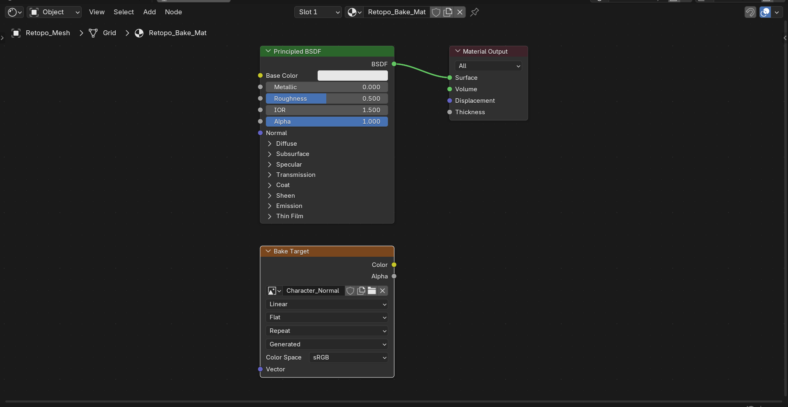
Phase 2: Configure bake settings
- Open Render Properties panel:
- Right side: properties panel
- Click camera icon (Render Properties)
- Scroll down to "Bake" section
- Set bake type:
- Bake Type dropdown → Normal
- This tells Blender to bake normal map
- Enable "Selected to Active":
- Check the "Selected to Active" box
- This means: bake FROM high-poly TO low-poly
- Essential for retopology baking
- Configure Ray Distance:
- Max Ray Distance: How far rays search for surface
- Too small: misses detail, gaps in bake
- Too large: captures wrong surfaces
- Start with 0.1, adjust if needed
- Extrusion: Pushes rays out from surface
- Prevents baking inside surfaces
- Usually 0.01-0.02 works
- Adjust if you see artifacts
- Max Ray Distance: How far rays search for surface
- Set Normal Space (important):
- Normal Space → Tangent
- Tangent space normals work with any orientation
- Standard for game engines and most uses
- Object space rare (special cases only)
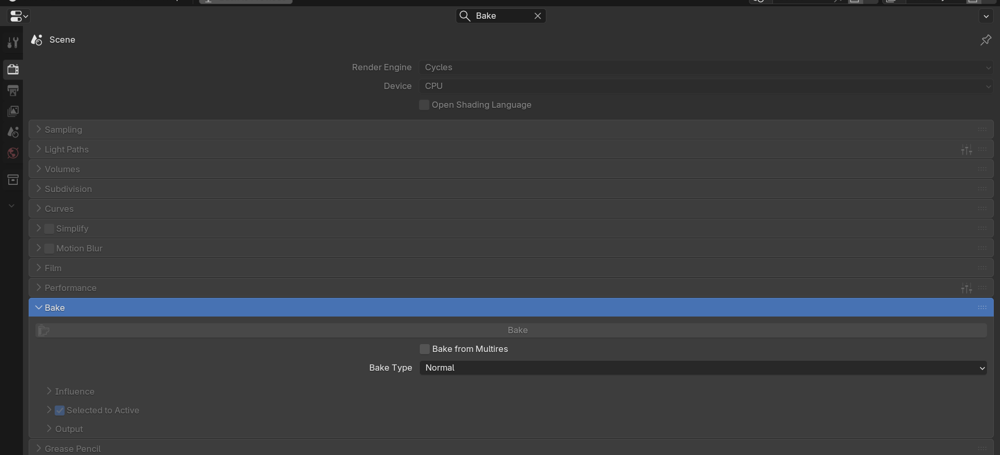
Phase 3: Select objects and bake
- Selection order matters:
- First: Select high-poly source mesh(es)
- Last: Shift select low-poly retopo mesh
- Low-poly (active object) should be brighter orange
- This tells Blender: bake FROM high-poly TO low-poly
- Verify Image Texture node selected:
- In Shader Editor (low-poly material)
- Image Texture node with your new image
- Must have white outline (selected)
- Click Bake button:
- Render Properties → Bake section → "Bake" button
- Blender processes (can take seconds to minutes)
- Progress bar shows in header
- Check result:
- Switch to UV Editor or Shader Editor
- View your image texture
- Should see purple/blue normal map data
- If it's blank or wrong, check settings
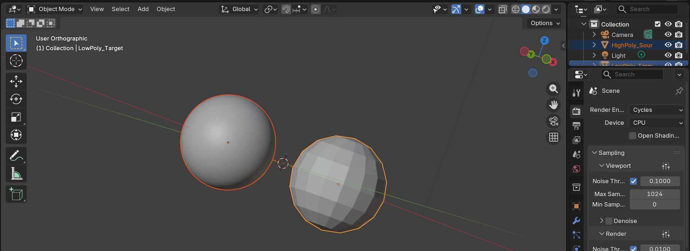
Phase 4: Save the baked image
- CRITICAL: Save your texture:
- UV Editor or Image Editor: Image menu → Save As
- Or Alt+S in image editor
- Choose location and filename
- Format: PNG (common) or OpenEXR (if 32-bit needed)
- If you don't save, image is lost when you close Blender!
- Connect normal map to material:
- Shader Editor: Image Texture → Normal Map node → Principled BSDF Normal input
- Add Normal Map node: Shift+A → Vector → Normal Map
- Connect: Image Texture (Color) → Normal Map (Color) → Principled BSDF (Normal)
- Set Image Texture Color Space to "Non-Color" (important!)
- Test the result:
- Switch to Material Preview or Rendered shading
- Add lights to see effect
- Low-poly mesh should show high-poly detail
- Success!
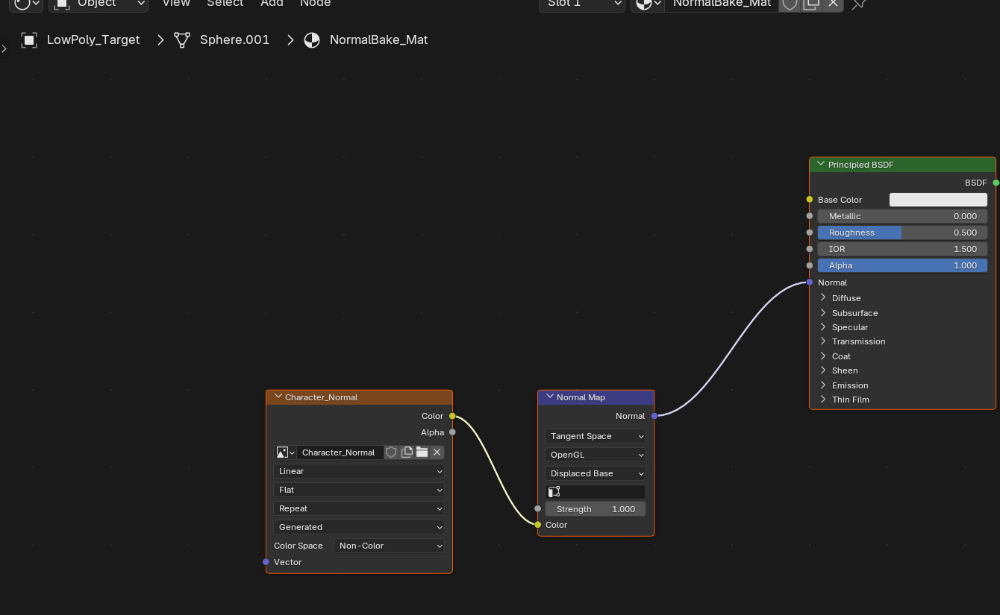
✅ Baking Quick Checklist
- ☐ Low-poly mesh has UVs
- ☐ Image Texture node created in low-poly material
- ☐ Image Texture node is selected (white outline)
- ☐ Bake Type set to "Normal"
- ☐ "Selected to Active" enabled
- ☐ Ray Distance configured (start at 0.1)
- ☐ Normal Space set to "Tangent"
- ☐ High-poly selected first, low-poly selected last (active)
- ☐ Click Bake
- ☐ Save baked image (Alt+S in image editor)
- ☐ Connect normal map to shader
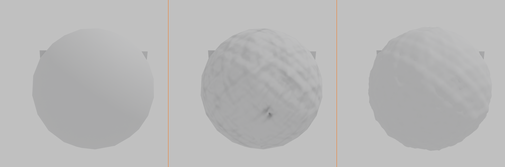
Baking Other Map Types
🎨 Beyond Normal Maps
Baking Ambient Occlusion:
- Purpose: Adds shadows in crevices and contact points
- Process:
- Create new image texture (grayscale okay)
- Bake Type → Ambient Occlusion
- Same setup as normal map (Selected to Active)
- Bake to image
- Using AO map:
- Multiply over base color
- Or use in Roughness for variation
- Adds subtle depth everywhere
Baking Diffuse/Color:
- When to use: If high-poly has painted colors or materials
- Process:
- Bake Type → Diffuse
- Influence: Usually "Color" only
- Transfers color information to texture
- Common in:
- Texture painting workflows
- Painted sculpts (Polypaint from ZBrush)
- When high-poly has applied materials
Baking Curvature (requires node setup):
- Not built-in to Blender:
- Need to use Bevel shader trick or external tools
- Or use Substance Painter for curvature maps
- Beyond scope of basic baking
- Alternative: Generate in texture painting software
Troubleshooting Baking Issues
⚠️ Common Baking Problems
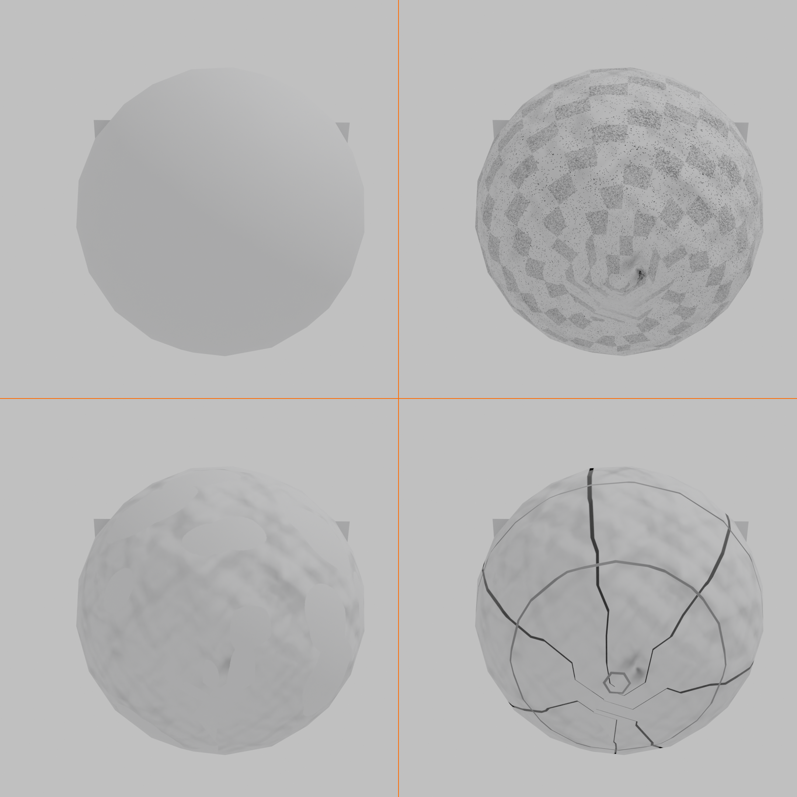
Problem: Baked texture is completely blank
- Cause 1: Image Texture node not selected
- Solution: Click the node (white outline appears)
- Cause 2: Low-poly has no UVs
- Solution: UV unwrap the retopo mesh first
- Cause 3: Wrong object active
- Solution: Select high-poly first, low-poly last
Problem: Bake has artifacts, strange colors, or wrong areas
- Cause 1: Ray Distance too large
- Rays hitting wrong parts of high-poly
- Solution: Decrease Max Ray Distance (try 0.05 or lower)
- Cause 2: Ray Distance too small
- Rays not reaching high-poly surface
- Gaps and missing detail in bake
- Solution: Increase Max Ray Distance
- Cause 3: Meshes not aligned
- Low-poly doesn't cover high-poly properly
- Solution: Check that retopo matches source mesh position
- Cause 4: Overlapping UVs
- Multiple faces write to same texture area
- Solution: Fix UV layout, ensure no overlaps
Problem: Normal map doesn't show in render
- Cause 1: Not connected to material
- Solution: Connect Image Texture → Normal Map node → Principled BSDF Normal
- Cause 2: Wrong color space
- Image Texture should be "Non-Color"
- Solution: In Image Texture node, set Color Space to Non-Color
- Cause 3: Need better lighting
- Normal maps affect lighting interaction
- Solution: Add lights or HDRI to see effect clearly
Problem: Bake looks low quality or pixelated
- Cause: Texture resolution too low
- 1024x1024 shows pixels on close-ups
- Solution: Use 2048x2048 or 4096x4096
- Balance quality vs. file size
Problem: Seams visible in baked texture
- Cause: UV seams create discontinuities
- Normal map has slight mismatch at seams
- Solution 1: Margin (padding)
- In Bake settings, increase Margin size
- Fills texture beyond UV edges
- Helps hide seams
- Solution 2: Better UV seam placement
- Put seams in hidden areas
- Under arms, back of head, etc.
- Minimize visible seams
Using Baked Maps in Production
🎮 Game Engine Integration
Export workflow:
- Save your textures externally:
- Normal map, AO map, color map
- PNG or TGA format common
- Organize in textures folder
- Export low-poly mesh:
- File → Export → FBX (most common)
- Or glTF/GLB for modern engines
- Include UVs (should be automatic)
- Import to game engine:
- Unity, Unreal, Godot, etc.
- Import mesh and textures
- Create material, assign textures to proper slots
- Normal map goes in Normal Map slot (engine-specific)
Real-time rendering considerations:
- Normal maps are real-time friendly:
- Minimal performance cost
- Huge visual improvement
- Standard in all modern games
- Texture resolution impacts memory:
- 4096x4096 = 64MB per texture (uncompressed)
- Mobile games often use 1024x1024 or 2048x2048
- PC/console can handle 4096x4096
- Engines usually compress automatically
- Mipmaps improve performance:
- Game engines generate smaller versions automatically
- Distant objects use lower res textures
- Saves memory and improves performance
✅ Complete Retopo-to-Game Pipeline
- Sculpt high-poly: Millions of polygons, all the detail
- Retopologize: Create clean low-poly mesh (5k-30k polys)
- UV unwrap: Low-poly gets clean UV layout
- Bake textures: Normal map (and others) capture detail
- Export: FBX/glTF mesh + PNG textures
- Import to engine: Set up material with baked maps
- Result: Game-ready asset with high-quality appearance
This is the standard professional workflow. Master this pipeline and you can create any game asset.
Advanced Baking Techniques
🚀 Professional Workflows
Cage-based baking (better control):
- What is a cage:
- Duplicate of low-poly, slightly enlarged
- Defines exactly where to sample high-poly
- Prevents wrong surfaces from being captured
- When to use cages:
- Complex models with separate pieces
- When automatic ray distance fails
- Professional production (more control)
- Setup in Blender:
- Duplicate low-poly mesh
- Scale slightly larger (covers high-poly)
- In Bake settings: enable Cage, select cage object
- Beyond basic tutorial scope, but important to know exists
Baking in Substance Painter (industry standard):
- Why professionals use Substance:
- Better baking algorithm (fewer artifacts)
- Automatic cage generation
- Bakes multiple maps at once
- Then texture painting in same software
- Workflow:
- Export high and low poly from Blender
- Import to Substance Painter
- Bake maps (one click, multiple outputs)
- Paint textures using baked maps as foundation
- Export final textures back to Blender/game engine
- Cost: Subscription software, but industry standard
Multiple UV sets (advanced):
- Concept: Different UV layouts for different purposes
- UV Set 1: High-res bake (normal maps)
- UV Set 2: Tiling textures (color, roughness)
- Combines unique and tiling details
- Game engine support: Most modern engines support this
- Benefit: Unique detail + tiling patterns = maximum quality
💡 Baking Completes The Circle: Retopology alone gives you clean geometry. But it looks simple. Basic. Boring. Baking restores the magic. Your low-poly mesh transforms. Sculpted details emerge. Surface complexity returns. Light plays across forms that aren't actually there. You've created an illusion—and it's perfect. Performance of a simple mesh. Appearance of a complex one. This is why retopology workflows exist. Not just to reduce polygons. But to reduce them WITHOUT losing quality. Baking is the trick. The sleight of hand. The professional secret. Master retopology AND baking together. That's when you become truly powerful. When you can make anything look like anything. At any performance cost. That's when you're not just making models. You're manufacturing illusions. And getting away with it.
🎯 Hands-On Project: Retopologize a Sculpted Object
Time to apply everything you've learned! This project will guide you through the complete retopology workflow from start to finish. You'll take a high-poly sculpted mesh, create clean production topology, and bake the details to textures.
📋 Project Brief
Goal: Create a game-ready retopologized version of a sculpted object with baked detail.
Target specs:
- Polygon budget: 5,000-10,000 triangles (2,500-5,000 quads)
- Clean quad topology (95%+ quads)
- Proper edge flow
- UV unwrapped
- Normal map baked at 2048x2048
Time estimate: 2-4 hours (first time), 1-2 hours (with practice)
Phase 1: Create or Import High-Poly Source
🎨 Starting Point
Option A: Use existing sculpt
- If you have a sculpted mesh from Lesson 28, use that
- Or find a practice mesh online (free sculpts available)
- Import into Blender if external file
Option B: Quick sculpt practice object
- Add UV Sphere (Shift+A → Mesh → UV Sphere)
- Enter Sculpt Mode, enable Dynamic Topology (top header)
- Sculpt some features: bumps, grooves, organic forms
- Remesh occasionally (Ctrl+R) to maintain density
- Spend 15-20 minutes creating interesting forms
- Goal: Create something with lots of surface detail
Verify your source mesh:
- Should have at least 50,000+ faces (more is fine)
- Check in header: Shows tri/face count
- Surface should have visible detail to capture
Phase 2: Manual Retopology
🔨 Build Clean Topology
- Prepare workspace:
- Select high-poly mesh
- Object Properties → Viewport Display → Display As: Wire
- Outliner: Click cursor icon to make unselectable
- Create retopo starting point:
- Shift+A → Mesh → Plane
- Enter Edit Mode (Tab)
- Position plane on high-poly surface
- Configure snapping:
- Enable snapping (magnet icon or Shift+Tab)
- Snap mode: Face
- Enable "Project Individual Elements" (crosshair icon)
- OR use Shrinkwrap modifier:
- Add Modifier → Shrinkwrap
- Target: Your high-poly mesh
- Wrap Method: Project
- Enable both axis directions
- Activate Poly Build tool:
- Toolbar: Click Poly Build icon
- Or Shift+Spacebar → search "Poly Build"
- Build the topology:
- Click edges to extrude new quads
- Work systematically, section by section
- Keep faces roughly square-shaped
- Think about edge flow continuously
- Cover entire surface with quads
- Target polygon count:
- Watch face count in header
- Aim for 2,500-5,000 quads
- That's 5,000-10,000 triangles for game engines
- Quality check:
- Add Subdivision Surface modifier (don't apply)
- Set to level 1 or 2
- Does it look smooth and correct?
- If pinching or artifacts, adjust vertices
💡 Pro Tip: Start Simple, Refine Later
Don't aim for perfect density on first pass. Build basic coverage with lower poly count, then add edge loops (Ctrl+R) where you need more detail. Easier to add than remove.
Phase 3: UV Unwrapping
📐 Prepare for Baking
- Select all faces of retopo mesh:
- Edit Mode, A to select all
- Quick unwrap:
- U → Smart UV Project
- Accept default settings (or adjust Island Margin to 0.02)
- Click OK
- Check UV layout:
- Switch to UV Editing workspace (top tabs)
- Or open UV Editor in any panel
- Islands should fill space efficiently
- No major overlaps (usually)
- Optional refinement:
- If Smart UV created too many islands, manually mark seams and unwrap
- For simple practice object, Smart UV is fine
Phase 4: Bake Normal Map
🔥 Transfer Detail to Texture
- Create target image:
- Select retopo mesh
- Shading workspace
- Shader Editor: Shift+A → Texture → Image Texture
- New image: "Practice_Normal", 2048x2048, RGB, no alpha
- Click on node to select it (white outline)
- Configure bake settings:
- Render Properties panel → Bake section
- Bake Type: Normal
- Enable "Selected to Active"
- Max Ray Distance: 0.1 (adjust if needed)
- Extrusion: 0.01
- Normal Space: Tangent
- Margin: 16 pixels (helps with seams)
- Select for baking:
- Object Mode
- Click high-poly mesh (select)
- Shift+Click retopo mesh (add to selection, make active)
- Retopo should be brighter orange (active object)
- Bake:
- Click "Bake" button in Render Properties
- Wait for progress bar to complete
- Check UV Editor: should see purple/blue normal map
- Save texture:
- UV/Image Editor: Image → Save As
- Or Alt+S
- Choose location, save as PNG
Phase 5: Apply Normal Map
✨ See the Results
- Setup material properly:
- Retopo mesh selected, Shading workspace
- Add Normal Map node: Shift+A → Vector → Normal Map
- Connect nodes:
- Image Texture (Color) → Normal Map (Color)
- Normal Map (Normal) → Principled BSDF (Normal)
- Set correct color space:
- Image Texture node: Color Space → Non-Color
- Critical for normal maps!
- View results:
- Viewport shading: Material Preview or Rendered
- Add lights if needed (sun lamp or HDRI)
- Your low-poly mesh should show high-poly detail!
- Compare:
- Toggle high-poly visibility (outliner eye icon)
- See difference: low poly count, high-poly appearance
- Success!
Success Checklist
✅ Project Complete When...
- ☐ Retopo mesh has 2,500-5,000 quads (5,000-10,000 tris)
- ☐ 95%+ quad topology (check with Select → Select All by Trait)
- ☐ Retopo mesh covers entire high-poly surface
- ☐ Silhouette matches original sculpt accurately
- ☐ UV unwrapping complete, no major overlaps
- ☐ Normal map baked at 2048x2048 or higher
- ☐ Normal map properly connected in material
- ☐ Detail visible in rendered view
- ☐ Subdivision Surface creates smooth result (if added)
- ☐ Texture files saved externally
Bonus Challenges
🚀 Take It Further
Challenge 1: Add Ambient Occlusion
- Bake AO map from high to low poly
- Mix it with base color in material
- See how it adds depth
Challenge 2: Multiple UV sets
- Create second UV map for tiling textures
- Combine unique baked details with tiling patterns
- More advanced material setup
Challenge 3: Game engine export
- Export retopo mesh as FBX
- Import to game engine (Unity/Unreal/Godot)
- Set up material with normal map in engine
- See it running in real-time!
Challenge 4: Character head retopology
- Find or sculpt a character head
- Retopologize with proper facial edge loops
- Focus on eyes, mouth, and deformation areas
- Much more challenging but great practice
💡 You Just Learned a Superpower: What you just did—taking high-poly and making it game-ready—is a foundational professional skill. Every character in modern games went through this process. Every hero asset. Every creature. You're now capable of that workflow. Yes, your first attempts are rough. That's expected. But you understand the pipeline now. Sculpt, retopo, UV, bake. High detail to low poly. Texture capture. This skill opens doors. Game studios need this. Freelance clients need this. Your own projects need this. Keep practicing. Do more retopo projects. Speed increases. Quality increases. Soon it becomes second nature. And when you can retopologize anything, make it production-ready, export it working—you're not just a 3D artist anymore. You're a professional pipeline artist. And that's valuable.
📚 Lesson Summary
Congratulations! You've completed one of the most technically demanding lessons in the course. Retopology is a complex skill that combines artistic understanding with technical precision. Let's review what you've mastered and look ahead to how this knowledge integrates into your 3D workflow.
🎯 Key Takeaways
Core Concepts:
- Retopology bridges art and production: Lets you sculpt freely, then optimize for real-world use
- Good topology enables everything: Animation, performance, modification, subdivision
- Edge flow follows function: Topology must support how the model will be used
- Baking preserves detail: Normal maps create illusion of high-poly geometry
- Multiple approaches exist: Manual, automated, and hybrid workflows all valid
Technical Skills:
- ✅ Recognize good vs. bad topology
- ✅ Use Poly Build tool for manual retopology
- ✅ Configure snapping and shrinkwrap for surface projection
- ✅ Apply automated retopology (Remesh, Quad Remesh)
- ✅ UV unwrap retopologized meshes
- ✅ Bake normal maps and other texture types
- ✅ Set up materials with baked textures
- ✅ Optimize for specific polygon budgets
Workflow Integration:
- 📋 Sculpting → Retopology → UV Unwrapping → Baking → Production
- 🎮 Export pipeline: FBX/glTF mesh + PNG textures → Game engine
- 🎬 Film/animation: Higher poly budgets, focus on deformation
- ⚡ Mobile/VR: Strict budgets, aggressive optimization
Understanding the Big Picture
🌍 Where Retopology Fits
Retopology is a bridge:
- Before retopo: Creative phase (total artistic freedom)
- During retopo: Technical optimization phase (art meets engineering)
- After retopo: Production phase (asset becomes usable)
Without retopology:
- Sculpts are beautiful but unusable in production
- Can't animate properly
- Too heavy for real-time rendering
- Won't integrate into pipelines
With retopology:
- Sculpts become production assets
- Animation-ready with proper edge flow
- Optimized for target platform
- Professional pipeline compatible
Topology Principles Recap
📐 The Golden Rules
Rule 1: Quads are king (95%+ target)
- Four-sided faces subdivide predictably
- Edge loops flow cleanly through quads
- Animation deformation works best with quads
- Few triangles acceptable in hidden areas
- No ngons (5+ sides) ever in final topology
Rule 2: Edge flow follows form and function
- Circular loops around joints (shoulders, elbows, knees)
- Concentric loops around facial features (eyes, mouth)
- Parallel loops along limbs and muscles
- Follows anatomy for organic models
- Follows mechanical structure for hard surface
Rule 3: Polygon density matches importance
- High density: faces, hands, deforming areas
- Medium density: visible surfaces, secondary features
- Low density: hidden areas, rigid sections
- Don't waste polygons on areas that don't matter
- Efficient allocation within budget
Rule 4: Poles have their place
- 3-edge vertices (poles) acceptable in rigid areas
- 5-edge vertices used for transitions
- Keep poles away from deforming areas
- Place strategically: forehead, back of head, shoulders
- Avoid in elbows, knees, mouth, eyes
Rule 5: Test with subdivision
- Add Subdivision Surface modifier to check quality
- Good topology subdivides cleanly
- Bad topology creates pinching and artifacts
- Most production assets use subdivision
- Always test before calling topology complete
Choosing Your Approach
For a side-by-side rating of each method's output quality, speed, ideal use, and main limitation, see the retopology method comparison matrix in the Automated Retopology section above. The decision matrix below maps those trade-offs onto common production scenarios.
🎯 Decision Matrix
| Scenario | Best Approach | Why |
|---|---|---|
| Learning topology fundamentals | 100% Manual | Builds deep understanding |
| Hero character for animation | Manual | Needs perfect edge flow |
| Game character (standard quality) | Hybrid | Speed + quality balance |
| Environment props/assets | Automated | Volume over perfection |
| Background characters/crowds | Automated | Never seen close up |
| Portfolio piece demonstration | Manual | Shows technical skill |
| Quick prototype/concept | Automated | Speed is priority |
| Client work with tight deadline | Hybrid | Practical compromise |
The hybrid approach (most common in professional work):
- Use automated tool (Quad Remesh) for base topology (30 minutes)
- Manual cleanup and optimization (1-2 hours)
- Focus manual work on critical areas (face, joints)
- Accept automated results for less important areas
- Total time: 1.5-2.5 hours vs. 4-8 hours pure manual
Common Retopology Scenarios
🎬 Real-World Applications
Scenario 1: Game character artist
- Input: ZBrush sculpt, 5 million triangles
- Target: PC game, 15,000 triangle budget
- Workflow:
- Export high-poly from ZBrush
- Import to Blender
- Manual retopo (focus on face/hands)
- Quad Remesh for body (then cleanup)
- UV unwrap
- Bake in Substance Painter
- Texture paint
- Export to game engine
- Time: 2-3 days total (8-12 hours retopo)
Scenario 2: Environment artist
- Input: 20 sculpted rocks and props
- Target: Mobile game, 500-2,000 triangles each
- Workflow:
- Quad Remesh all assets (automated)
- Quick manual cleanup pass
- Batch UV unwrap
- Batch bake normal maps
- Apply master material
- Time: 1-2 days for all 20 assets
Scenario 3: Animation studio character
- Input: Character sculpt with complex forms
- Target: Film animation, 50,000+ triangle budget (flexible)
- Workflow:
- 100% manual retopology
- Perfect edge loops around every joint
- Facial topology supports full blend shapes
- Test deformation extensively
- Multiple iterations until perfect
- UV unwrap meticulously
- High-res texture baking (4k-8k)
- Time: 1-2 weeks (hero character, no shortcuts)
Practice Recommendations
🎯 Building Retopology Mastery
Week 1-2: Fundamentals
- Retopologize 3-5 simple objects (sphere with details, organic blob)
- Focus on clean quads, even spacing
- Target: 1,000-3,000 poly practice models
- Manual only - build muscle memory
Week 3-4: Characters
- Retopologize character head (face practice)
- Focus on facial edge loops (eyes, mouth, nose)
- Target: 3,000-5,000 polys for head
- Still manual - this teaches anatomy
Week 5-6: Full Character
- Complete character retopology
- Body + head + hands
- Target: 15,000-20,000 polys total
- Test deformation with simple armature
Week 7-8: Hybrid Workflows
- Use automated tools + manual cleanup
- Practice multiple characters
- Focus on speed without sacrificing quality
- Complete UV and baking pipeline
Month 3+: Production Speed
- Aim for 4-6 hour character retopo
- Props in 30-60 minutes
- Full pipeline: sculpt to game-ready in 2-3 days
- Now you're professional speed
Resources for practice:
- Free sculpts on Sketchfab (filter for downloadable models)
- Your own sculpts from Lesson 28
- 3D scan data (often messy, good retopo practice)
- Contest entries (retopology challenges online)
Troubleshooting Quick Reference
⚠️ Quick Fixes for Common Issues
Vertices won't stick to surface:
- ✓ Check snapping enabled (magnet icon blue)
- ✓ Snap mode set to "Face"
- ✓ "Project Individual Elements" enabled
- ✓ Alternative: Use Shrinkwrap modifier instead
Bake result is blank:
- ✓ Image Texture node selected (white outline)
- ✓ Low-poly has UVs (check UV Editor)
- ✓ "Selected to Active" enabled
- ✓ High-poly selected first, low-poly last (active)
Bake has artifacts/wrong colors:
- ✓ Adjust Max Ray Distance (try 0.05 or 0.2)
- ✓ Check meshes are aligned properly
- ✓ Verify no overlapping UVs
- ✓ Increase Margin (padding) to 16-32 pixels
Normal map not showing in render:
- ✓ Connect through Normal Map node (not directly to BSDF)
- ✓ Set Color Space to "Non-Color"
- ✓ Add lights to see effect (normal maps affect lighting)
Topology deforms badly:
- ✓ Check edge loops around joints (need concentric circles)
- ✓ Remove poles from deforming areas
- ✓ Add more density where bending occurs
- ✓ Test with Subdivision Surface modifier
What's Next?
🚀 Continuing Your Journey
Immediate next steps:
- Complete the project: Retopologize at least one full object before moving on
- Practice variations: Try both manual and automated approaches
- Test in context: Export to game engine or render in production scenario
Advanced retopology skills to explore:
- Quad draw mode: Alternative manual retopo method in Blender
- Cage baking: More precise control over baking rays
- Multiple UV sets: Separate layouts for unique and tiling textures
- External tools: TopoGun, Maya retopo tools, 3D Coat
- Character specialization: Facial topology for blend shapes
Related lessons to review/preview:
- Lesson 28: Sculpting Basics - Creates the high-poly you retopologize
- Lesson 12: UV Unwrapping Basics - Essential for baking
- Lesson 13: Texture Painting - After baking, add painted details
- Lesson 31: Advanced Modifier Stack - Using retopo with complex modifiers
- Lesson 36-39: Character Creation - Full character pipeline using retopo
Portfolio development:
- Retopology showcases technical skill to employers
- Show wireframes in portfolio (demonstrates clean topology)
- Include poly count metrics (shows optimization skills)
- Before/after comparisons (high-poly vs. baked low-poly)
- Consider breakdown videos showing process
🎓 Final Thoughts
Retopology is one of those skills that separates hobbyists from professionals. It's not the flashy, creative part of 3D. It's the technical, detail-oriented, sometimes tedious part. But it's absolutely essential.
Every professional 3D artist working in games, animation, or VFX knows retopology. Not because they love doing it (though some do find it meditative), but because production requires it. Your beautiful sculpts mean nothing if they can't be used.
The good news: retopology is learnable. It's not creative genius. It's technique and practice. The more you do it, the faster you get. The patterns become obvious. The shortcuts become automatic. What takes 8 hours now takes 2 hours after practice.
So practice. Retopologize everything. Characters, props, creatures, vehicles. Manual, automated, hybrid. Build the skills. Build the speed. And when you can take any sculpt and make it production-ready—clean topology, optimized poly count, baked details, game-engine-ready—you'll have a skill that never goes out of demand.
Welcome to professional-level 3D production. You've earned this.